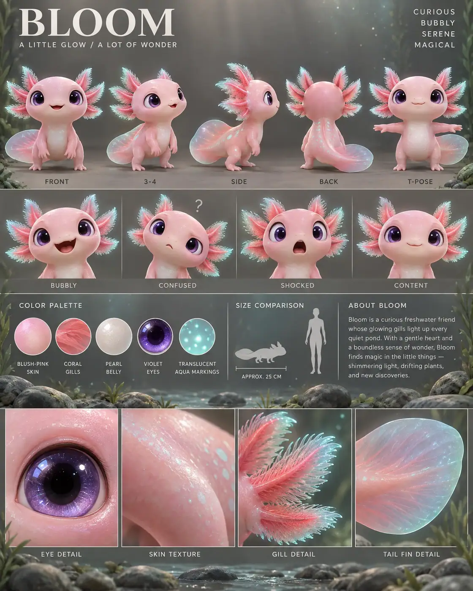

#95 of 100
Bloom
Axolotl
Reptiles & AmphibiansA LITTLE GLOWA LOT OF WONDER
- Species
- Axolotl
- Collection
- Reptiles & Amphibians
- Height
- 25 CM
- Personality
- CURIOUSBUBBLYSERENEMAGICAL
- Colour palette
- BLUSH-PINK SKINCORAL GILLSPEARL BELLYVIOLET EYESTRANSLUCENT AQUA MARKINGS
- Expressions
- bubbly open-mouth smile
- confused tilted-head look
- dramatic shocked expression
- calm contented smile
- Detail panels
- EYE DETAIL
- SKIN TEXTURE
- GILL DETAIL
- TAIL FIN DETAIL
- Character note
- Bloom — a curious freshwater friend whose glowing gills light up every quiet pond
Reference sheet prompt
Cute axolotl named BLOOM, with a soft rounded blush-pink body, oversized glossy violet eyes, a tiny smiling mouth, short curved limbs, a broad rounded tail fin, and feathery coral-like external gills with softly luminous aqua edges. A gentle freshwater creature filled with wonder high-end 3D animated feature character reference sheet, original character design, polished cinematic family-animation aesthetic, portrait 4:5 presentation board, clean scientific-meets-character-design layout, top-left header reading “BLOOM” with the tagline “A LITTLE GLOW / A LOT OF WONDER,” four personality traits in the top-right corner reading “CURIOUS / BUBBLY / SERENE / MAGICAL” full-body turnaround in the top section — exactly five evenly spaced views: front / 3-4 / side / back / T-pose, all gills and tail-fin shapes clearly visible, identical luminous markings and body proportions in every view, clean labels beneath each pose row of 4 bust-length facial expressions: bubbly open-mouth smile, confused tilted-head look, dramatic shocked expression, calm contented smile, gills changing angle subtly with each emotion color palette swatches with clean uppercase labels: BLUSH-PINK SKIN, CORAL GILLS, PEARL BELLY, VIOLET EYES, TRANSLUCENT AQUA MARKINGS neutral warm-grey studio background with subtle clear freshwater habitat cues: faint aquatic plant silhouettes, rounded river stones, tiny suspended particles, and restrained aqua light rays limited to the information band and detail strip, main pose area remaining uncluttered, thin section dividers, soft cinematic 3-point lighting middle information band containing the color swatches, a small axolotl silhouette beside a human height comparison, approximate length label “APPROX. 25 CM,” and a short readable character bio describing Bloom as a curious freshwater friend whose glowing gills light up every quiet pond bottom row of exactly 4 macro detail panels labeled EYE DETAIL, SKIN TEXTURE, GILL DETAIL, TAIL FIN DETAIL, showing the glossy violet eye, smooth pearlescent skin, translucent feathery gills, and broad rounded tail fin 8k render, consistent chibi proportions, large rounded head, tiny four-fingered feet, smooth slightly glossy skin, translucent material details, clean editorial typography, no extra animals, no duplicate limbs, no full underwater scene, no random text, no logos